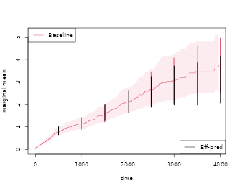
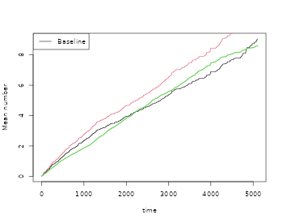

Recurrent events
Klaus Holst & Thomas Scheike
2025-10-26
Source:vignettes/recurrent-events.Rmd
recurrent-events.RmdOverview
For recurrent events data it is often of interest to compute basic descriptive quantities to get some basic understanding of the phenonmenon studied. We here demonstrate how one can compute:
- the marginal mean
- efficient marginal mean estimation with fast computation of standard errors
- works for large data
- the Ghosh-Lin Cox type regression for the marginal mean, possibly
with composite outcomes.
- efficient regression augmentation of the Ghosh-Lin model
- works for large data
- clusters can be specfied
- allows a stratified baseline
- the variance of a recurrent events process
- the probability of exceeding k events
- the two-stage recurrent events model
We also show how to improve the efficiency of recurrents events marginal mean.
In addition several tools can be used for simulating recurrent events and bivariate recurrent events data, also with a possible terminating event:
- recurrent events up to two causes and death, given rates of
survivors and death on Cox form.
- frailty extenstions
- the Ghosh-Lin model when the survival rate is on Cox form.
- frailty extenstions
- The general illness death model with cox models for all hazards.
Simulation of recurrents events
We start by simulating some recurrent events data with two type of events with cumulative hazards
- (rate among survivors)
- (rate among survivors)
where we consider types 1 and 2 and with a rate of the terminal event given by . We let the events be independent, but could also specify a random effects structure to generate dependence.
When simulating data we can impose various random-effects structures to generate dependence
Dependence=0: The intensities can be independent.
-
Dependence=1: We can one gamma distributed random effects . Then the intensities are
-
Dependence=2: We can draw normally distributed random effects were the variance (var.z) and correlation can be specified (cor.mat). Then the intensities are
-
Dependence=3: We can draw gamma distributed random effects were the sum-structure can be speicifed via a matrix cor.mat. We compute for .
Then the intensities are
We return to how to run the different set-ups later and start by simulating independent processes.
The key functions are
- simRecurrent
- simple simulation with only one event type and death
- simRecurrentII
- extended version with possibly multiple types of recurrent events (but rates can be 0)
- Allows Cox types rates with subject specific rates
- simRecurrentIII
- lists are allowed for multiple events and cause of death (competing risks)
- Allows Cox types rates with subject specific rates
- sim.recurrent to simulate from Cox-Cox (marginals) or Ghosh-Lin-Cox
In addition we can simulate data from the Ghosh-Lin model and where marginals of the rates among survivors are on on Cox form
- simGLcox
- can simulate data from Ghosh-Lin model (also simRecurrentCox)
- with frailties
- where survival model for terminal event is on Cox form
- can simulate data where rates among survivors are are con Cox form
- with frailties
see examples below for specific models.
Utility functions
We here mention two utility functions
- tie.breaker for breaking ties among jump-times which is expected in the functions below.
- count.history that counts the number of jumps previous for each subject that is and .
Marginal Mean
We start by estimating the marginal mean where is the timing of the terminal event. The marginal mean is the average number of events seen before time .
This is based on a rate model for
- the type 1 events
- the terminal event
and is defined as where and
and can therefore be estimated by a
- Kaplan-Meier estimator,
- Nelson-Aalen estimator for
where such that the estimator is
Cook & Lawless (1997), and developed further in Gosh & Lin (2000).
The variance can be estimated based on the asymptotic expansion of
with mean-zero processes
- ,
- .
as in Gosh & Lin (2000)
Generating data
We start by generating some data to illustrate the computation of the marginal mean
data(CPH_HPN_CRBSI)
dr <- CPH_HPN_CRBSI$terminal
base1 <- CPH_HPN_CRBSI$crbsi
base4 <- CPH_HPN_CRBSI$mechanical
rr <- simRecurrent(200,base1,death.cumhaz=dr)
rr$x <- rnorm(nrow(rr))
rr$strata <- floor((rr$id-0.01)/100)
dlist(rr,.~id| id %in% c(1,7,9))
#> id: 1
#> entry time status dtime fdeath death start stop x strata
#> 1 0 132.6 0 132.6 1 1 0 132.6 1.386 0
#> ------------------------------------------------------------
#> id: 7
#> entry time status dtime fdeath death start stop x strata
#> 7 0 141.3 0 141.3 1 1 0 141.3 0.6628 0
#> ------------------------------------------------------------
#> id: 9
#> entry time status dtime fdeath death start stop x strata
#> 9 0.0 433.5 1 558.7 1 0 0.0 433.5 -0.7528 0
#> 204 433.5 558.7 0 558.7 1 1 433.5 558.7 -0.6565 0The status variable keeps track of the recurrent evnts and their type, and death the timing of death.
To compute the marginal mean we simly estimate the two rates functions of the number of events of interest and death by using the phreg function (to start without covariates). Then the estimates are combined with standard error computation in the recurrentMarginal function
# to fit non-parametric models with just a baseline
xr <- phreg(Surv(entry,time,status)~cluster(id),data=rr)
xdr <- phreg(Surv(entry,time,death)~cluster(id),data=rr)
par(mfrow=c(1,3))
plot(xdr,se=TRUE)
title(main="death")
plot(xr,se=TRUE)
# robust standard errors
rxr <- robust.phreg(xr,fixbeta=1)
plot(rxr,se=TRUE,robust=TRUE,add=TRUE,col=4)
# marginal mean of expected number of recurrent events
out <- recurrentMarginal(Event(entry,time,status)~cluster(id),data=rr,cause=1,death.code=2)
plot(out,se=TRUE,ylab="marginal mean",col=2)
We can also extract the estimate in different time-points
summary(out,times=c(1000,2000))
#> [[1]]
#> new.time mean se CI-2.5% CI-97.5% strata
#> 245 1000 1.929941 0.1179801 1.712020 2.175601 0
#> 384 2000 4.070540 0.2243678 3.653708 4.534926 0The marginal mean can also be estimated in a stratified case:
xr <- phreg(Surv(entry,time,status)~strata(strata)+cluster(id),data=rr)
xdr <- phreg(Surv(entry,time,death)~strata(strata)+cluster(id),data=rr)
par(mfrow=c(1,3))
plot(xdr,se=TRUE)
title(main="death")
plot(xr,se=TRUE)
rxr <- robust.phreg(xr,fixbeta=1)
plot(rxr,se=TRUE,robust=TRUE,add=TRUE,col=1:2)
out <- recurrentMarginal(Event(entry,time,status)~strata(strata)+cluster(id),
data=rr,cause=1,death.code=2)
plot(out,se=TRUE,ylab="marginal mean",col=1:2)
Further, if we adjust for covariates for the two rates we can still do predictions of marginal mean, what can be plotted is the baseline marginal mean, that is for the covariates equal to 0 for both models. Predictions for specific covariates can also be obtained with the recmarg (recurren marginal mean used solely for predictions without standard error computation).
# cox case
xr <- phreg(Surv(entry,time,status)~x+cluster(id),data=rr)
xdr <- phreg(Surv(entry,time,death)~x+cluster(id),data=rr)
par(mfrow=c(1,3))
plot(xdr,se=TRUE)
title(main="death")
plot(xr,se=TRUE)
rxr <- robust.phreg(xr)
plot(rxr,se=TRUE,robust=TRUE,add=TRUE,col=1:2)
out <- recurrentMarginalPhreg(xr,xdr)
plot(out,se=TRUE,ylab="marginal mean",col=1:2)
#### predictions witout se's
###outX <- recmarg(xr,dr,Xr=1,Xd=1)
###plot(outX,add=TRUE,col=3)Here I simulate multiple types and two causes of death causes of death
rr <- simRecurrentList(100,list(base1,base1,base4),death.cumhaz=list(dr,base4),cens=3/5000,dependence=0)
dtable(rr,~status+death,level=2)
#>
#> status
#> death 0 1 2 3
#> 0 31 120 109 10
#> 1 56 0 0 0
#> 2 13 0 0 0
mets:::showfitsimList(rr,list(base1,base1,base4),list(dr,base4))
Improving efficiency
We now simulate some data where there is strong heterogenity such that we can improve the efficiency for censored survival data. The augmentation is a regression on the history for each subject consisting of the specified terms terms: Nt, Nt2 (Nt squared), expNt (exp(-Nt)), NtexpNt (Nt*exp(-Nt)) or by simply specifying these directly. This was developed in Cortese and Scheike (2022).
rr <- simRecurrentII(200,base1,base4,death.cumhaz=dr,cens=3/5000,dependence=4,var.z=1)
rr <- count.history(rr)
rr <- transform(rr,statusD=status)
rr <- dtransform(rr,statusD=3,death==1)
dtable(rr,~statusD+status+death,level=2,response=1)
#>
#> statusD
#> status 0 1 2 3
#> 0 79 0 0 121
#> 1 0 275 0 0
#> 2 0 0 35 0
#>
#> statusD
#> death 0 1 2 3
#> 0 79 275 35 0
#> 1 0 0 0 121
##xr <- phreg(Surv(start,stop,status==1)~cluster(id),data=rr)
##dr <- phreg(Surv(start,stop,death)~cluster(id),data=rr)
# marginal mean of expected number of recurrent events
out <- recurrentMarginal(Event(start,stop,statusD)~cluster(id),data=rr,cause=1,death.code=3)
times <- 500*(1:10)
recEFF1 <- recurrentMarginalAIPCW(Event(start,stop,statusD)~cluster(id),data=rr,times=times,cens.code=0,
death.code=3,cause=1,augment.model=~Nt)
#> Warning in cbind(new.time, cumh[index, ]): number of rows of result is not a
#> multiple of vector length (arg 2)
#> Warning in cbind(new.time, cumh[index, ]): number of rows of result is not a
#> multiple of vector length (arg 2)
with( recEFF1, cbind(times,muP,semuP,muPAt,semuPAt,semuPAt/semuP))
#> times muP semuP muPAt semuPAt
#> [1,] 500 0.6613768 0.08161137 0.6608857 0.08146438 0.9981990
#> [2,] 1000 1.0744212 0.12757420 1.0656868 0.12598264 0.9875244
#> [3,] 1500 1.4043440 0.18482988 1.4104172 0.17775750 0.9617357
#> [4,] 2000 1.6558938 0.23411074 1.6507507 0.22529350 0.9623373
#> [5,] 2500 1.9655087 0.31221814 1.9690466 0.29506881 0.9450726
#> [6,] 3000 2.1616770 0.37981206 2.2020438 0.35291111 0.9291730
#> [7,] 3500 2.4425027 0.51943450 2.5131440 0.45781796 0.8813776
#> [8,] 4000 2.7545313 0.66543528 2.8476086 0.58085220 0.8728906
#> [9,] 4500 2.8247378 0.66133467 2.9107949 0.59608745 0.9013401
#> [10,] 5000 2.8247378 0.66133467 2.9107949 0.59608745 0.9013401
times <- 500*(1:10)
###recEFF14 <- recurrentMarginalAIPCW(Event(start,stop,statusD)~cluster(id),data=rr,times=times,cens.code=0,
###death.code=3,cause=1,augment.model=~Nt+Nt2+expNt+NtexpNt)
###with(recEFF14,cbind(times,muP,semuP,muPAt,semuPAt,semuPAt/semuP))
recEFF14 <- recurrentMarginalAIPCW(Event(start,stop,statusD)~cluster(id),data=rr,times=times,cens.code=0,
death.code=3,cause=1,augment.model=~Nt+I(Nt^2)+I(exp(-Nt))+ I( Nt*exp(-Nt)))
#> Warning in cbind(new.time, cumh[index, ]): number of rows of result is not a
#> multiple of vector length (arg 2)
#> Warning in cbind(new.time, cumh[index, ]): number of rows of result is not a
#> multiple of vector length (arg 2)
with(recEFF14,cbind(times,muP,semuP,muPAt,semuPAt,semuPAt/semuP))
#> times muP semuP muPAt semuPAt
#> [1,] 500 0.6613768 0.08161137 0.6676498 0.08124057 0.9954566
#> [2,] 1000 1.0744212 0.12757420 1.0653090 0.12509253 0.9805473
#> [3,] 1500 1.4043440 0.18482988 1.3934980 0.17474088 0.9454147
#> [4,] 2000 1.6558938 0.23411074 1.6239380 0.22154341 0.9463189
#> [5,] 2500 1.9655087 0.31221814 1.8411294 0.28399831 0.9096150
#> [6,] 3000 2.1616770 0.37981206 2.0444055 0.33651790 0.8860116
#> [7,] 3500 2.4425027 0.51943450 2.1320568 0.41402380 0.7970664
#> [8,] 4000 2.7545313 0.66543528 2.3831891 0.52860655 0.7943771
#> [9,] 4500 2.8247378 0.66133467 2.3332102 0.53618560 0.8107629
#> [10,] 5000 2.8247378 0.66133467 2.3332102 0.53618560 0.8107629
plot(out,se=TRUE,ylab="marginal mean",col=2)
k <- 1
for (t in times) {
ci1 <- c(recEFF1$muPAt[k]-1.96*recEFF1$semuPAt[k],
recEFF1$muPAt[k]+1.96*recEFF1$semuPAt[k])
ci2 <- c(recEFF1$muP[k]-1.96*recEFF1$semuP[k],
recEFF1$muP[k]+1.96*recEFF1$semuP[k])
lines(rep(t,2)-2,ci2,col=2,lty=1,lwd=2)
lines(rep(t,2)+2,ci1,col=1,lty=1,lwd=2)
k <- k+1
}
legend("bottomright",c("Eff-pred"),lty=1,col=c(1,3))
In the case where covariates might be important but we are still interested in the marginal mean we can also augment wrt these covariates
n <- 200
X <- matrix(rbinom(n*2,1,0.5),n,2)
colnames(X) <- paste("X",1:2,sep="")
###
r1 <- exp( X %*% c(0.3,-0.3))
rd <- exp( X %*% c(0.3,-0.3))
rc <- exp( X %*% c(0,0))
fz <- NULL
rr <- mets:::simGLcox(n,base1,dr,var.z=0,r1=r1,rd=rd,rc=rc,fz,model="twostage",cens=3/5000)
rr <- cbind(rr,X[rr$id+1,])
dtable(rr,~statusD+status+death,level=2,response=1)
#>
#> statusD
#> status 0 1 3
#> 0 92 0 108
#> 1 0 556 0
#>
#> statusD
#> death 0 1 3
#> 0 92 363 0
#> 1 0 193 108
times <- seq(500,5000,by=500)
recEFF1x <- recurrentMarginalAIPCW(Event(start,stop,statusD)~cluster(id),data=rr,times=times,
cens.code=0,death.code=3,cause=1,augment.model=~X1+X2)
with(recEFF1x, cbind(muP,muPA,muPAt,semuP,semuPA,semuPAt,semuPAt/semuP))
#> muP muPA muPAt semuP semuPA semuPAt
#> [1,] 1.145071 1.144032 1.143158 0.08446448 0.08438871 0.08433747 0.9984963
#> [2,] 1.992395 1.987834 1.967759 0.16163097 0.16021919 0.15987853 0.9891577
#> [3,] 2.987070 3.041386 2.975609 0.29841261 0.29352422 0.29276652 0.9810796
#> [4,] 3.750338 3.781183 3.742977 0.38089153 0.37347550 0.37254937 0.9780983
#> [5,] 4.401481 4.363984 4.379360 0.45643233 0.44836832 0.44476899 0.9744467
#> [6,] 5.058667 4.943227 4.948666 0.58230638 0.56486481 0.55682137 0.9562344
#> [7,] 5.797576 5.777539 5.609930 0.75658794 0.72607368 0.71043739 0.9390017
#> [8,] 6.500899 6.740989 6.188770 0.89938615 0.86946649 0.84664142 0.9413547
#> [9,] 7.160265 7.277316 6.575000 1.02814316 1.02039663 0.99768282 0.9703734
#> [10,] 7.709737 7.297200 6.832030 1.13548187 1.11392250 1.09078010 0.9606319
out <- recurrentMarginal(Event(start,stop,statusD)~cluster(id),data=rr,cause=1,death.code=3)
summary(out,times=times)
#> [[1]]
#> new.time mean se CI-2.5% CI-97.5% strata
#> 201 500 1.145071 0.08446448 0.9909346 1.323184 0
#> 310 1000 1.992395 0.16163097 1.6995055 2.335760 0
#> 397 1500 2.987070 0.29841261 2.4558915 3.633136 0
#> 448 2000 3.750338 0.38089153 3.0734121 4.576359 0
#> 483 2500 4.401481 0.45643233 3.5919438 5.393469 0
#> 509 3000 5.058667 0.58230638 4.0369534 6.338966 0
#> 529 3500 5.797576 0.75658794 4.4891486 7.487362 0
#> 543 4000 6.500899 0.89938615 4.9569146 8.525806 0
#> 552 4500 7.160265 1.02814316 5.4038714 9.487531 0
#> 557 5000 7.709737 1.13548187 5.7766426 10.289721 0Regression models for the marginal mean
One can also do regression modelling , using the model then Ghost-Lin suggested IPCW score equations that are implemented in the recreg function of mets.
First we generate data that from a Ghosh-Lin model with and the baseline given by base1, this is done under the assumption that the death rate given covariates are on Cox form with baseline dr:
n <- 100
X <- matrix(rbinom(n*2,1,0.5),n,2)
colnames(X) <- paste("X",1:2,sep="")
###
r1 <- exp( X %*% c(0.3,-0.3))
rd <- exp( X %*% c(0.3,-0.3))
rc <- exp( X %*% c(0,0))
fz <- NULL
rr <- mets:::simGLcox(n,base1,dr,var.z=1,r1=r1,rd=rd,rc=rc,fz,cens=1/5000,type=2)
rr <- cbind(rr,X[rr$id+1,])
out <- recreg(Event(start,stop,statusD)~X1+X2+cluster(id),data=rr,cause=1,death.code=3,cens.code=0)
outs <- recreg(Event(start,stop,statusD)~X1+X2+cluster(id),data=rr,cause=1,death.code=3,cens.code=0,
cens.model=~strata(X1,X2))
summary(out)$coef
#> Estimate S.E. dU^-1/2 P-value
#> X1 0.5194368 0.3797930 0.07990766 0.1714110
#> X2 -0.3358640 0.3803112 0.07976036 0.3771663
summary(outs)$coef
#> Estimate S.E. dU^-1/2 P-value
#> X1 0.5762836 0.3571995 0.08035274 0.1066710
#> X2 -0.2775462 0.3520266 0.08007337 0.4304488
## checking baseline
par(mfrow=c(1,1))
plot(out)
plot(outs,add=TRUE,col=2)
lines(scalecumhaz(base1,1),col=3,lwd=2)
We note that for the extended censoring model we gain a little efficiency and that the estimates are close to the true values.
Also possible to do IPCW regression at fixed time-point
outipcw <- recregIPCW(Event(start,stop,statusD)~X1+X2+cluster(id),data=rr,cause=1,death.code=3,
cens.code=0,times=2000)
outipcws <- recregIPCW(Event(start,stop,statusD)~X1+X2+cluster(id),data=rr,cause=1,death.code=3,
cens.code=0,times=2000,cens.model=~strata(X1,X2))
summary(outipcw)$coef
#> Estimate Std.Err 2.5% 97.5% P-value
#> (Intercept) 1.19494027 0.2038193 0.7954619 1.5944187 4.552780e-09
#> X1 0.18509341 0.2825398 -0.3686743 0.7388612 5.123997e-01
#> X2 0.09805584 0.2805028 -0.4517195 0.6478312 7.266601e-01
summary(outipcws)$coef
#> Estimate Std.Err 2.5% 97.5% P-value
#> (Intercept) 1.18811953 0.2024682 0.7912891 1.5849499 4.406099e-09
#> X1 0.20055180 0.2761747 -0.3407407 0.7418443 4.677301e-01
#> X2 0.09514999 0.2729203 -0.4397640 0.6300640 7.273622e-01We can also do the Mao-Lin type composite outcome where we both count the cause 1 and deaths for example
out <- recreg(Event(start,stop,statusD)~X1+X2+cluster(id),data=rr,cause=c(1,3),
death.code=3,cens.code=0)
summary(out)$coef
#> Estimate S.E. dU^-1/2 P-value
#> X1 0.4896610 0.3403976 0.07609363 0.1502931
#> X2 -0.3056174 0.3395604 0.07595286 0.3680998Also demonstrate that this can be done with competing risks death (change some of the cause 3 deaths to cause 4) and with weights that follow the causes, here 1 and 3.
rr$binf <- rbinom(nrow(rr),1,0.5)
rr$statusDC <- rr$statusD
rr <- dtransform(rr,statusDC=4, statusD==3 & binf==0)
rr$weight <- 1
rr <- dtransform(rr,weight=2,statusDC==3)
outC <- recreg(Event(start,stop,statusDC)~X1+X2+cluster(id),data=rr,cause=c(1,3),
death.code=c(3,4),cens.code=0)
summary(outC)$coef
#> Estimate S.E. dU^-1/2 P-value
#> X1 0.5069982 0.3651533 0.07814845 0.1649991
#> X2 -0.3255327 0.3653288 0.07801576 0.3728929
outCW <- recreg(Event(start,stop,statusDC)~X1+X2+cluster(id),data=rr,cause=c(1,3),
death.code=c(3,4),cens.code=0,wcomp=c(1,2))
summary(outCW)$coef
#> Estimate S.E. dU^-1/2 P-value
#> X1 0.4955643 0.3521275 0.07650295 0.1593256
#> X2 -0.3160290 0.3519907 0.07638286 0.3692744
plot(out,ylab="Mean composite")
plot(outC,col=2,add=TRUE)
plot(outCW,col=3,add=TRUE)
Predictions and standard errors can be computed via the iid decompositions of the baseline and the regression coefficients. We illustrate this for the standard Ghosh-Lin model and it requires that the model is fitted with the option cox.prep=TRUE
out <- recreg(Event(start,stop,statusD)~X1+X2+cluster(id),data=rr,cause=1,death.code=3,cens.code=0,
cox.prep=TRUE)
summary(out)
#>
#> n events
#> 740 640
#>
#> 100 clusters
#> coeffients:
#> Estimate S.E. dU^-1/2 P-value
#> X1 0.519437 0.379793 0.079908 0.1714
#> X2 -0.335864 0.380311 0.079760 0.3772
#>
#> exp(coeffients):
#> Estimate 2.5% 97.5%
#> X1 1.68108 0.79856 3.5389
#> X2 0.71472 0.33917 1.5061
baseiid <- iidBaseline(out,time=3000)
GLprediid(baseiid,rr[1:5,])
#> pred se-log lower upper
#> [1,] 9.117785 0.3788898 4.338882 19.160237
#> [2,] 3.876474 0.3881948 1.811361 8.296003
#> [3,] 3.876474 0.3881948 1.811361 8.296003
#> [4,] 3.876474 0.3881948 1.811361 8.296003
#> [5,] 6.516666 0.2461914 4.022230 10.558056The Ghosh-Lin model can be made more efficient by the regression augmentation method. First computing the augmentation and then in a second step the augmented estimator (Cortese and Scheike (2023)):
outA <- recreg(Event(start,stop,statusD)~X1+X2+cluster(id),data=rr,cause=1,death.code=3,
cens.code=0,augment.model=~Nt+X1+X2)
summary(outA)$coef
#> Estimate S.E. dU^-1/2 P-value
#> X1 0.5716809 0.3461524 0.08022919 0.09863056
#> X2 -0.3447143 0.3480247 0.07981423 0.32193577We note that the simple augmentation improves the standard errors as expected. The data was generated assuming independence with previous number of events so it would suffice to augment only with the covariates.
Two-stage modelling
We simulate data with a terminal event on Cox form and recurrent events satisfying the Ghosh-Lin model or having a rate on Cox form.
- type=3 is Ghosh-Lin model for recurrent events and Cox for terminal event.
- type=2 is Cox model for recurrent events among survivors and Cox for terminal event.
- simulations based on time-grid to make linear approximations of cumulative hazards
Now we fit the two-stage model (the recreg must be called with twostage=TRUE)
set.seed(100)
n <- 200
X <- matrix(rbinom(n*2,1,0.5),n,2)
colnames(X) <- paste("X",1:2,sep="")
###
r1 <- exp( X %*% c(0.3,-0.3))
rd <- exp( X %*% c(0.3,-0.3))
rc <- exp( X %*% c(0,0))
fz <- NULL
## type=3 is cox-cox and type=2 is Ghosh-Lin/Cox model
rr <- mets:::simGLcox(n,base1,dr,var.z=1,r1=r1,rd=rd,rc=rc,fz,cens=1/5000,type=3)
rr <- cbind(rr,X[rr$id+1,])
###
out <- phreg(Event(start,stop,statusD==1)~X1+X2+cluster(id),data=rr)
outs <- phreg(Event(start,stop,statusD==3)~X1+X2+cluster(id),data=rr)
## cox/cox
tsout <- twostageREC(outs,out,data=rr)
summary(tsout)
#> Cox(recurrent)-Cox(terminal) intensity model
#>
#> 200 clusters
#> coeffients:
#> Estimate Std.Err 2.5% 97.5% P-value
#> dependence1 1.14651 0.14126 0.86964 1.42339 0
#>
#> var,shared:
#> Estimate Std.Err 2.5% 97.5% P-value
#> dependence1 1.14651 0.14126 0.86964 1.42339 0
###
rr <- mets:::simGLcox(n,base1,dr,var.z=1,r1=r1,rd=rd,rc=rc,fz,cens=1/5000,type=3,share=0.5)
rr <- cbind(rr,X[rr$id+1,])
###
out <- phreg(Event(start,stop,statusD==1)~X1+X2+cluster(id),data=rr)
outs <- phreg(Event(start,stop,statusD==3)~X1+X2+cluster(id),data=rr)
#
tsout <- twostageREC(outs,out,data=rr,model="shared")
summary(tsout)
#> Cox(recurrent)-Cox(terminal) intensity model
#>
#> 200 clusters
#> coeffients:
#> Estimate Std.Err 2.5% 97.5% P-value
#> dependence1 1.07333 0.14096 0.79707 1.34960 0
#> share1 0.67344 0.12832 0.42193 0.92495 0
#>
#> var,shared:
#> Estimate 2.5% 97.5%
#> dependence1 1.07333 0.79707 1.3496
#> share1 0.67344 0.42193 0.9250
###
rr <- mets:::simGLcox(n,base1,dr,var.z=1,r1=r1,rd=rd,rc=rc,fz,cens=1/5000,type=2)
rr <- cbind(rr,X[rr$id+1,])
outs <- phreg(Event(start,stop,statusD==3)~X1+X2+cluster(id),data=rr)
outgl <- recreg(Event(start,stop,statusD)~X1+X2+cluster(id),data=rr,twostage=TRUE,death.code=3)
##
## ghosh-lin/cox
glout <- twostageREC(outs,outgl,data=rr,theta=1)
summary(glout)
#> Ghosh-Lin(recurrent)-Cox(terminal) mean model
#>
#> 200 clusters
#> coeffients:
#> Estimate Std.Err 2.5% 97.5% P-value
#> dependence1 1.04401 0.08988 0.86785 1.22017 0
#>
#> var,shared:
#> Estimate Std.Err 2.5% 97.5% P-value
#> dependence1 1.04401 0.08988 0.86785 1.22017 0
###
glout <- twostageREC(outs,outgl,data=rr,model="shared",theta=1,nu=0.9)
#> Warning in log(N): NaNs produced
#> Warning in log(N): NaNs produced
#> Warning in log(N): NaNs produced
#> Warning in log(N): NaNs produced
#> Warning in log(N): NaNs produced
#> Warning in log(N): NaNs produced
#> Warning in log(N): NaNs produced
#> Warning in log(N): NaNs produced
#> Warning in log(N): NaNs produced
#> Warning in log(N): NaNs produced
#> Warning in log(N): NaNs produced
#> Warning in log(N): NaNs produced
summary(glout)
#> Ghosh-Lin(recurrent)-Cox(terminal) mean model
#>
#> 200 clusters
#> coeffients:
#> Estimate Std.Err 2.5% 97.5% P-value
#> dependence1 1.192629 0.094129 1.008140 1.377117 0
#> share1 1.643844 0.176676 1.297566 1.990121 0
#>
#> var,shared:
#> Estimate 2.5% 97.5%
#> dependence1 1.1926 1.0081 1.3771
#> share1 1.6438 1.2976 1.9901
glout$gradient
#> [1] -1.823718e-08 2.506173e-08Standard errors are computed assuming that the parameters of out and outs are both known, and therefore propobly a bit to small. We could do a bootstrap to get more reliable standard errors.
Simulations with specific structure
The function simGLcox can simulate data where the recurrent process has mean on Ghosh-Lin form. The key is that where is a possible frailty. Therefore leads to a Ghosh-Lin model. We can choose the survival model to have Cox form among survivors by the option model=“twostage”, otherwise model=“frailty” uses the survival model with rate . The is gamma distributed with a variance that can be specified. The simulations are based on a piecwise-linear approximation of the hazard functions for and .
n <- 100
X <- matrix(rbinom(n*2,1,0.5),n,2)
colnames(X) <- paste("X",1:2,sep="")
###
r1 <- exp( X %*% c(0.3,-0.3))
rd <- exp( X %*% c(0.3,-0.3))
rc <- exp( X %*% c(0,0))
rr <- mets:::simGLcox(n,base1,dr,var.z=0,r1=r1,rd=rd,rc=rc,model="twostage",cens=3/5000)
rr <- cbind(rr,X[rr$id+1,])We can also simulate from models where the terminal event is on Cox form and the rate among survivors is on Cox form.
underlying these models we have a shared frailty model
rr <- mets:::simGLcox(100,base1,dr,var.z=1,r1=r1,rd=rd,rc=rc,type=3,cens=3/5000)
rr <- cbind(rr,X[rr$id+1,])
margsurv <- phreg(Surv(start,stop,statusD==3)~X1+X2+cluster(id),rr)
recurrent <- phreg(Surv(start,stop,statusD==1)~X1+X2+cluster(id),rr)
estimate(margsurv)
#> Estimate Std.Err 2.5% 97.5% P-value
#> X1 0.2535 0.2553 -0.2469 0.7538 0.3208
#> X2 -0.2595 0.2637 -0.7764 0.2574 0.3252
estimate(recurrent)
#> Estimate Std.Err 2.5% 97.5% P-value
#> X1 0.6675 0.3019 0.07583 1.25921 0.02702
#> X2 -0.4356 0.2637 -0.95247 0.08135 0.09864
par(mfrow=c(1,2));
plot(margsurv); lines(dr,col=3);
plot(recurrent); lines(base1,col=3)
We can simulate data with underlying dependence fromm the two-stage model (simGLcox) or using simRecurrent random effects models, for Cox-Cox or Ghosh-Lin-Cox models.
Here with marginals on - Cox- Cox form - Ghosh-Lin - Cox form
Draws covariates from data and simulates data that has the marginals given.
simcoxcox <- sim.recurrent(recurrent,margsurv,n=10,data=rr)
recurrentGL <- recreg(Event(start,stop,statusD)~X1+X2+cluster(id),rr,death.code=3)
simglcox <- sim.recurrent(recurrentGL,margsurv,n=10,data=rr)Other marginal properties
The mean is a useful summary measure but it is very easy and useful to look at other simple summary measures such as the probability of exceeding events
-
- cumulative incidence of with competing .
that is thus equivalent to a certain cumulative incidence of occurring before . We denote this cumulative incidence as .
We note also that can be written as with , such that its mean can be written as and estimated by That is very similar to the “product-limit” estimator for
We use the esimator of the probabilty of exceeding “k” events based on the fact that is equivalent to suggesting that its mean can be computed as and estimated by
To compute these estimators we use the prob.exceed.recurrent function
rr <- simRecurrentII(200,base1,base4,death.cumhaz=dr,cens=3/5000,dependence=4,var.z=1)
rr <- transform(rr,statusD=status)
rr <- dtransform(rr,statusD=3,death==1)
rr <- count.history(rr)
dtable(rr,~statusD)
#>
#> statusD
#> 0 1 2 3
#> 93 287 32 107
oo <- prob.exceed.recurrent(Event(entry,time,statusD)~cluster(id),rr,cause=1,death.code=3)
plot(oo,types=1:5)
We can also look at the mean and variance based on the estimators just described

Multiple events
We now generate recurrent events with two types of events. We start by generating data as before where all events are independent.
rr <- simRecurrentII(200,base1,cumhaz2=base4,death.cumhaz=dr)
rr <- count.history(rr)
dtable(rr,~death+status)
#>
#> status 0 1 2
#> death
#> 0 32 651 84
#> 1 168 0 0Based on this we can estimate also the joint distribution function, that is the probability that
# Bivariate probability of exceeding
## oo <- prob.exceedBiRecurrent(rr,1,2,exceed1=c(1,5),exceed2=c(1,2))
## with(oo, matplot(time,pe1e2,type="s"))
## nc <- ncol(oo$pe1e2)
## legend("topleft",legend=colnames(oo$pe1e2),lty=1:nc,col=1:nc)Looking at other simulations with dependence
Using the normally distributed random effects we plot 4 different settings. We have variance for all random effects and change the correlation. We let the correlation between the random effect associated with and be denoted and the correlation between the random effects associated between and the terminal event be denoted as , and organize all correlation in a vector .
- Scenario I Independence among all efects.
data(CPH_HPN_CRBSI)
dr <- CPH_HPN_CRBSI$terminal
base1 <- CPH_HPN_CRBSI$crbsi
base4 <- CPH_HPN_CRBSI$mechanical
par(mfrow=c(1,3))
var.z <- c(0.5,0.5,0.5)
# death related to both causes in same way
cor.mat <- corM <- rbind(c(1.0, 0.0, 0.0), c(0.0, 1.0, 0.0), c(0.0, 0.0, 1.0))
rr <- simRecurrentII(200,base1,base4,death.cumhaz=dr,var.z=var.z,cor.mat=cor.mat,dependence=2)
rr <- count.history(rr,types=1:2)
### cor(attr(rr,"z"))
### coo <- covarianceRecurrent(rr,1,2,status="status",start="entry",stop="time")
### plot(coo,main ="Scenario I")- Scenario II Independence among survivors but dependence on terminal event
var.z <- c(0.5,0.5,0.5)
# death related to both causes in same way
cor.mat <- corM <- rbind(c(1.0, 0.0, 0.5), c(0.0, 1.0, 0.5), c(0.5, 0.5, 1.0))
rr <- simRecurrentII(200,base1,base4,death.cumhaz=dr,var.z=var.z,cor.mat=cor.mat,dependence=2)
rr <- count.history(rr,types=1:2)
### coo <- covarianceRecurrent(rr,1,2,status="status",start="entry",stop="time")
### par(mfrow=c(1,3))
### plot(coo,main ="Scenario II")- Scenario III Positive dependence among survivors and dependence on terminal event
var.z <- c(0.5,0.5,0.5)
# positive dependence for N1 and N2 all related in same way
cor.mat <- corM <- rbind(c(1.0, 0.5, 0.5), c(0.5, 1.0, 0.5), c(0.5, 0.5, 1.0))
rr <- simRecurrentII(200,base1,base4,death.cumhaz=dr,var.z=var.z,cor.mat=cor.mat,dependence=2)
rr <- count.history(rr,types=1:2)
### coo <- covarianceRecurrent(rr,1,2,status="status",start="entry",stop="time")
### par(mfrow=c(1,3))
### plot(coo,main="Scenario III")- Scenario IV Negative dependence among survivors and positive dependence on terminal event
var.z <- c(0.5,0.5,0.5)
# negative dependence for N1 and N2 all related in same way
cor.mat <- corM <- rbind(c(1.0, -0.4, 0.5), c(-0.4, 1.0, 0.5), c(0.5, 0.5, 1.0))
rr <- simRecurrentII(200,base1,base4,death.cumhaz=dr,var.z=var.z,cor.mat=cor.mat,dependence=2)
rr <- count.history(rr,types=1:2)
### coo <- covarianceRecurrent(rr,1,2,status="status",start="entry",stop="time")
### par(mfrow=c(1,3))
### plot(coo,main="Scenario IV")SessionInfo
sessionInfo()
#> R version 4.5.1 (2025-06-13)
#> Platform: x86_64-pc-linux-gnu
#> Running under: Ubuntu 24.04.3 LTS
#>
#> Matrix products: default
#> BLAS: /usr/lib/x86_64-linux-gnu/openblas-pthread/libblas.so.3
#> LAPACK: /usr/lib/x86_64-linux-gnu/openblas-pthread/libopenblasp-r0.3.26.so; LAPACK version 3.12.0
#>
#> locale:
#> [1] LC_CTYPE=C.UTF-8 LC_NUMERIC=C LC_TIME=C.UTF-8
#> [4] LC_COLLATE=C.UTF-8 LC_MONETARY=C.UTF-8 LC_MESSAGES=C.UTF-8
#> [7] LC_PAPER=C.UTF-8 LC_NAME=C LC_ADDRESS=C
#> [10] LC_TELEPHONE=C LC_MEASUREMENT=C.UTF-8 LC_IDENTIFICATION=C
#>
#> time zone: UTC
#> tzcode source: system (glibc)
#>
#> attached base packages:
#> [1] stats graphics grDevices utils datasets methods base
#>
#> other attached packages:
#> [1] mets_1.3.9
#>
#> loaded via a namespace (and not attached):
#> [1] cli_3.6.5 knitr_1.50 rlang_1.1.6
#> [4] xfun_0.53 textshaping_1.0.4 jsonlite_2.0.0
#> [7] listenv_0.9.1 future.apply_1.20.0 lava_1.8.1
#> [10] htmltools_0.5.8.1 ragg_1.5.0 sass_0.4.10
#> [13] rmarkdown_2.30 grid_4.5.1 evaluate_1.0.5
#> [16] jquerylib_0.1.4 fastmap_1.2.0 numDeriv_2016.8-1.1
#> [19] yaml_2.3.10 mvtnorm_1.3-3 lifecycle_1.0.4
#> [22] timereg_2.0.7 compiler_4.5.1 codetools_0.2-20
#> [25] fs_1.6.6 htmlwidgets_1.6.4 Rcpp_1.1.0
#> [28] future_1.67.0 lattice_0.22-7 systemfonts_1.3.1
#> [31] digest_0.6.37 R6_2.6.1 parallelly_1.45.1
#> [34] parallel_4.5.1 splines_4.5.1 Matrix_1.7-3
#> [37] bslib_0.9.0 tools_4.5.1 globals_0.18.0
#> [40] survival_3.8-3 pkgdown_2.1.3 cachem_1.1.0
#> [43] desc_1.4.3